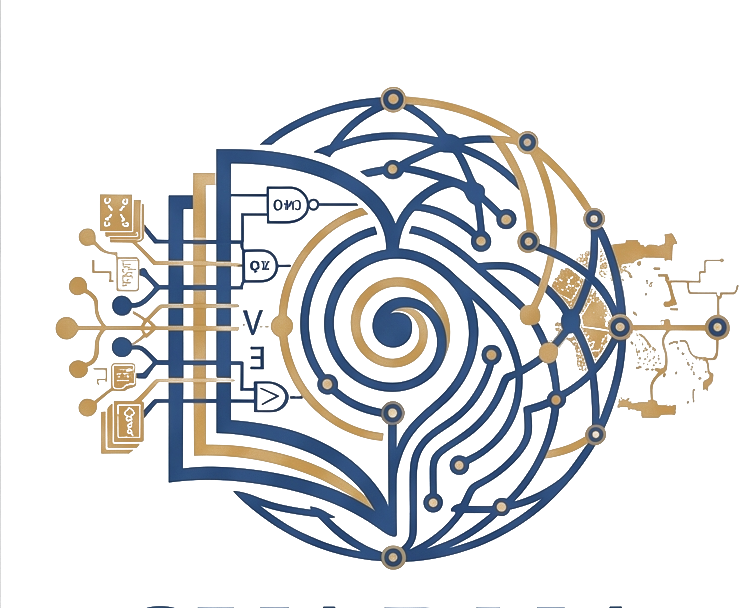

SVARNA
Home
Research
Natural Language Inference
Greek NLP
Type-Theoretical Semantics
Digital Humanities
Linguistic Distance Studies
Large Language Models
Publications
Datasets
Team
Team Overview
Lab Director
Collaborators
Join Our Team
News
Live Demos
Software
Research Map
Contact
☾
Research Map
How the lab's areas connect — computational, formal, and the neuro-symbolic bridge
Computational
Formal
Bridge (neuro-symbolic)
computational
Deep Learning, NLU, Explainability & Neuro-Symbolic Systems
computational
NLP for Greek, its Dialects & Under-Resourced Languages
computational
NLP for Arabic Dialects & Language Distance Models
bridge
RAG & Knowledge-Enhanced LLMs
formal
Type-Theoretic Semantics & Proof Assistants
formal
Probabilistic & Bayesian Semantics
bridge
AI for Digital Humanities
computational
Dialogue Modelling & Incremental Processing
formal
Formal Syntax of Greek, Dialects & Diachronic Linguistics
formal
Music & Language: Shared Processing Strategies